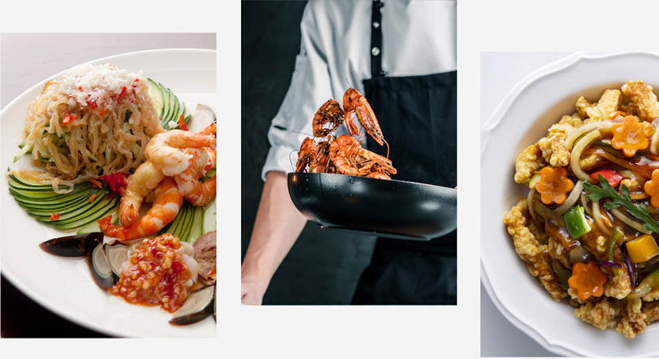

학원 소개
학원 소개
찾아오시는 길
한식 과정
강사 소개
수업 커리큘럼
중식 과정
강사 소개
수업 커리큘럼
일식 과정
강사 소개
수업 커리큘럼
게 시 판
공지사항
건의사항
소중한 수강평
마이페이지
아이디 찾기
비밀번호 찾기
개인정보 수정
회원탈퇴
당신이 바로 차세대 요리사 No.1 !!
회원가입
|
로그인
|
ID/비밀번호 찾기

|강사 소개
| 강사 경력
2024.00.00 학원 수료
2024.00.00 오너 쉐프
2024.00.00 겸임 강사
2024.00.00 겸임 교수
|중식 조리 자격증 커리큘럼
커리큘럼 바로가기
월
화
수
목
금
탕수육
깐풍기
탕수생선살
난자완스
홍쇼두부
새우볶음밥
유니짜장면,
울면
오징어냉채, 해파리냉채
양장피잡채
부추자채, 고추잡채
마파두부
채소볶음, 새우케첩볶음
라조기, 경장육사
빠스옥수수, 빠스고구마